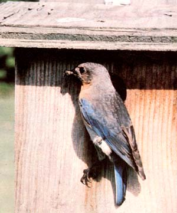

Even Bluebirds Get The Blues
Building a wooden bird house that's functional, adds beauty to home.
By Samuel L. Skeen
March/April 1983
A scant 50 years ago, the eastern bluebird (Sialia sialis) was common throughout the rural portion of eastern North America. However, as a result of such factors as habitat loss (particularly the loss of nesting sites), the competition of imported species (including the English sparrow and the starling), and pesticide poisoning, this valuable and beautiful member of the thrush family is now so rare that many country folks can't remember when they last saw one. Incidentally, the western bluebird (Sialia mexicana occidentalis) and the mountain bluebird (Sialia currucoides) face similar problems - and the suggestions made in this article apply to all three species.
Fortunately, the situation - while quite serious - is not irreversible. People who live in "bluebird country" can counteract all of the major threats to this species' survival - by not using chemical pesticides and herbicides, by building appropriate nesting boxes, and by monitoring those houses to evict any unwanted avian competitors.
A Bluebird Bungalow
It's not at all difficult to build a shelter that will attract members of the Sialia genus. However, the abode must be specifically designed to accommodate the tenant that you're seeking - and to discourage occupancy by the bird's rivals. The accompanying illustration (see Image Gallery) details the construction of a bluebird nesting box.
I've found that the front of such a house is the most important component of the entire structure. After the "starling proof" 1 1/2-inch-diameter hole is drilled (angle it slightly upward to prevent rain from getting in), the interior of the panel should be grooved - horizontally - with a chisel or saw. These "steps" will give the fledglings a means of leaving the dwelling when they're ready to try their wings.
Once the front piece is finished - and the other main sections have been cut to shape - it's time to begin the actual assembly of the home. I find it easiest to attach the sides of the box to the back first, and then install the bottom - making sure that the sides and back extend a quarter inch below the base piece so that water won't run down the outer walls and collect in the center of the bottom before dripping off, possibly soaking through the floor and wetting the nest in the process. (By the way, if you use wood screws and glue - rather than nails - to assemble your nest box, it will likely have a longer life expectancy.)
When the base piece is secured in place, the roof can be attached - at which point it'll be time to add the front panel. In my design (shown above) the front can be swung open on the two upper nails (they serve as hinges). So when positioning the door, you'll have to leave a gap between its top and the roof to insure that the portal won't bind when you try to pivot it up. I secure the door in its closed position simply by drilling angled holes through the lower edges of each side and into the bottom of the front section. I can then slip largeheaded nails into each hole, keeping the door closed and, at the same time, giving the impression that the box is permanently fastened shut - which helps prevent human passers-by from disturbing the feathered tenants.
Once you've assembled the home, go on to drill four 1/4-inch-diameter holes along a line drawn parallel to and one inch below each side's roof overhang. These openings will provide ventilation without allowing too much draft. Then go on to bore five 1/4-inch-diameter holes in the floor (one in each comer and another in the center) to provide emergency drainage in the unlikely event that water gets into the cavity. (While I've got my drill handy, I usually go on to bore some 1/8-inch holes in the back panel to use if I later decide to wire the box to a steel post.)
Some people will want to paint the birdhouse (or even cover it with bark-sided sawmill slabs), and - while an unpainted structure will look more natural - it's likely that a coat of latex will increase the life span of the dwelling. However, if you decide to add color to the exterior of your bluebird box, stick to dull tones of light green, gray or tan - and don't paint the inside of the home.
A Site for Soar Eyes
You may well be surprised to learn that the design of a bluebird house - no matter how exacting it may seem - is no more critical than is the placement of the box. These creatures prefer homesites that are free of heavy vegetation (allowing the feathered hunters to hop along the ground in search of insects) and that include scattered "observation post" trees. Golf courses and large country cemeteries are near-optimum bluebird habitats. Orchards, big yards, and sunlit fence rows will also likely provide all of the necessary amenities.
A fencepost can serve as a good support for the avian abode. Mount the box from three to five feet above the ground - clearing; away any surrounding vegetation that might prevent the adults from having a clear view of their surroundings when leaving the house - on the side of the post op posite any pasture that might be occupied by livestock. The relatively low positioning of the house will, some experts claim, help prevent English sparrows from taking over the dwelling. Should these birds do so anyway, though, it's best to simply evict them before any eggs are laid.
You'll also want to position the bluebird homes at least 100 yards apart (three houses per acre is a good rule of thumb), but do try to keep them convenient to your homestead or to a route that you regularly trace in the course of your chores. By being able to visit the birdhouses relatively often, you can enjoy the tenants that you've worked to attract and, as mentioned above, deal with unwanted guests, as well.
Furthermore, bluebirds can produce as many as three broods during a summer (two could be considered common). And you'll increase the chances that your box will house consecutive families if you're able to clean it out, discarding the old nest and unplugging the drainage holes, as soon as the first group of fledglings takes to the trees. (Should such regular cleaning be impossible, do at least make the rounds of your birdhouses each winter in order to clean the quarters for the following spring's tenants.)
EDITOR'S NOTE: Further information on bluebirds - including listings of available books and birdhouse plans as well as complete birdhouses - can be obtained from The North American Bluebird Society, Dept. TMEN, Box 6295, Silver Spring, Maryland 20906-0295 ... or from Homes for Bluebirds, Inc., Dept. TMEN, Route 1, Bailey, North Carolina 27807. Please enclose a self-addressed, stamped envelope when writing either of these helpful organizations.
|
SAMUEL L. SKEEN This lovely little insect-eater can't make a comeback without some human help. |
 SAMUEL L. SKEEN |
SAMUEL L. SKEEN |
 SAMUEL L. SKEEN |
|
|